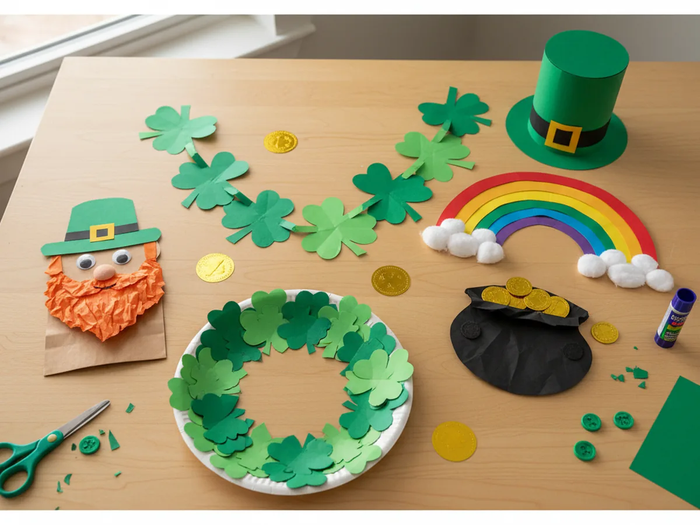
March is one of those months that feels a little gray until something cheerful comes along to brighten the kitchen table. A handful of green paper, a few gold scraps, and the simplest St Patrick's Day paper crafts can fill an afternoon with shamrocks, rainbows, and giggly little leprechauns. No glitter explosions, no special tools, just sweet shared moments with your child. 🍀
This list gathers 20 of the easiest St Patrick's Day paper crafts for kids of every age, from toddlers stamping shamrocks for the first time to older kids folding little origami clovers. Each idea uses simple paper, a glue stick, and the kind of small handful of supplies you probably already have. Pick one to try this weekend or work through a few together as the holiday gets closer. 🌈
What You'll Need
Most of these St Patrick's Day paper crafts use the same handful of basic supplies, so a quick gather of these items will set you up for the whole list.
- Crayola Construction Paper Assorted Colors, a 240-sheet pack with plenty of green, white, and orange for shamrocks and leprechauns.
- Bright Creations Gold Metallic Cardstock, 50 shiny sheets perfect for paper coins and pots of gold.
- Fiskars 5 inch Blunt-Tip Kids Scissors, the trusted safe scissors for little hands cutting out shamrock shapes.
- Elmer's Disappearing Purple Glue Sticks 6-Pack, washable glue sticks that show kids exactly where they have spread.
- Crayola Broad Line Markers Classic Colors, a 10-pack for adding faces, details, and lucky messages.
- A roll of clear tape or a stapler, for joining strips, cones, and paper bag puppets.
- Optional extras: googly eyes, ribbon, gold star stickers, and yellow yarn.
20 Adorable St Patrick's Day Paper Craft Ideas
1. Paper Shamrock Garland
Cut a stack of green construction paper shamrocks using a simple three-heart-and-stem template, then glue or tape each one onto a long piece of yarn or string to make a cheerful garland. Drape it across a window, the back of a chair, or along the fireplace mantel for an instant March pop of green. This is one of those St Patrick's Day paper crafts that even toddlers can help with, especially if you pre-cut the shamrocks for them to thread.
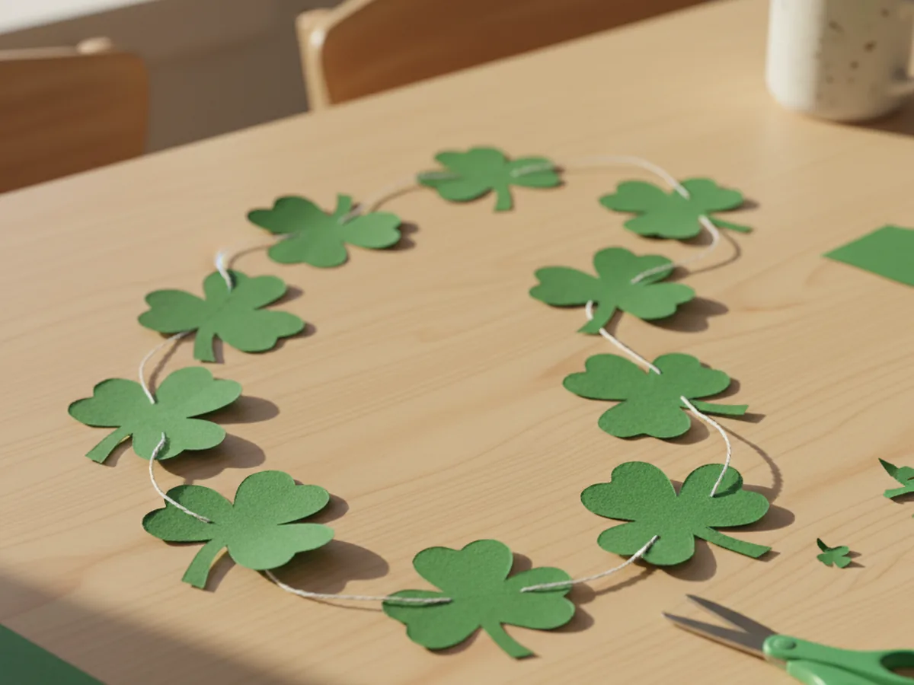
2. Paper Plate Rainbow with Pot of Gold
Cut a paper plate in half to form a rainbow arch, then glue rows of red, orange, yellow, green, blue, and purple paper strips across the curve. Add a small black paper pot at one end and a sprinkle of gold cardstock circles for the lucky pot of gold. The bright colors make this one of the most beloved St Patrick's Day paper crafts, and kids feel so proud hanging it on the fridge.
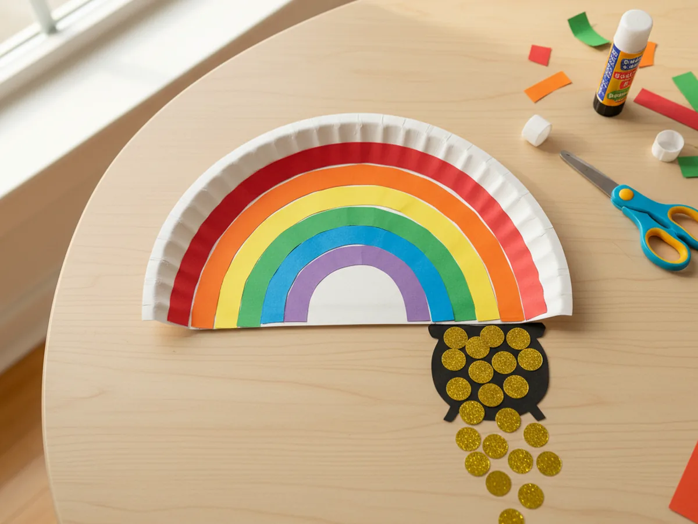
3. Leprechaun Paper Bag Puppet
Turn a small brown paper bag into a friendly leprechaun puppet using a circle face, a tall green paper hat with a yellow buckle, an orange paper beard, and a marker-drawn smile. Kids slip their hand inside and the puppet wiggles its mouth as it talks. This is one of the most playful paper craft for St Patrick's Day ideas because the puppet keeps entertaining everyone long after craft time ends.
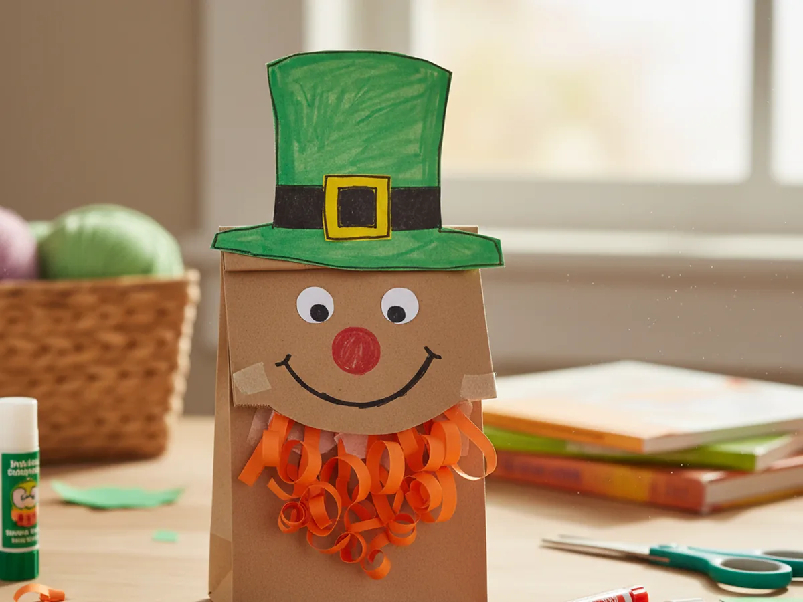
4. Four-Heart Paper Shamrock
Cut four green paper hearts and arrange them with the points meeting in the middle to make a perfect shamrock shape. Glue them down on white cardstock and add a small green stem at the bottom. This clever trick is a wonderful way to teach little kids that big shapes can be built from smaller ones, and it makes one of the sweetest St Patty's Day paper crafts for the whole family.
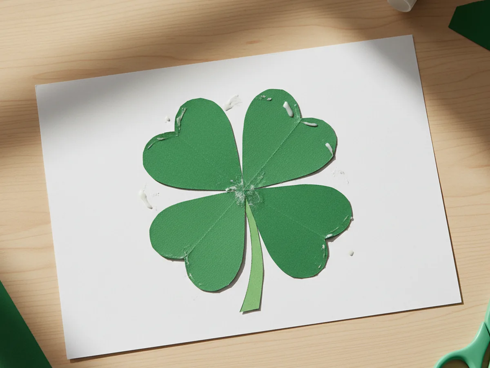
5. Handprint Shamrock Card
Trace your child's hand four times on green paper, cut out each handprint, and arrange them on cardstock with all the wrists meeting in the middle to form a chunky, lovable shamrock. Fold a fresh sheet of cardstock in half for the card base and glue the handprint shamrock on the front. St Patrick's Day paper crafts like this one quickly become keepsakes that grandparents save for years.
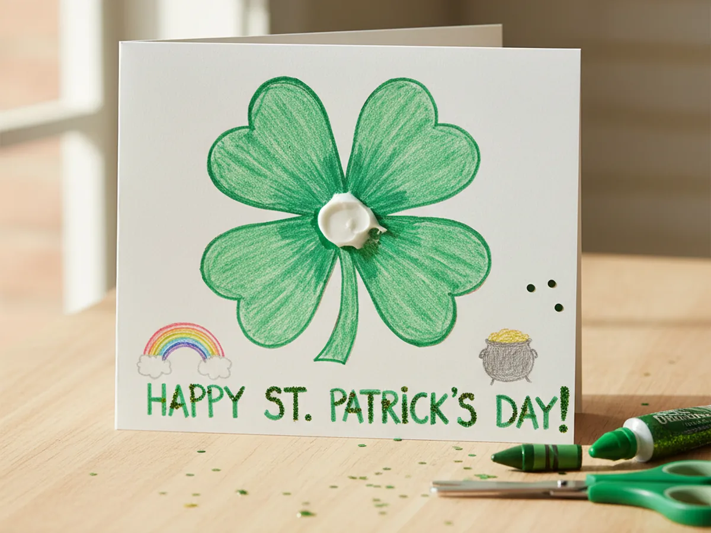
6. Paper Strip Shamrock Loops
Cut three long green paper strips, loop each one into a teardrop shape, and glue them together at the bottom with a tiny stem to make a chunky, dimensional shamrock. The looped petals give the shamrock real shape and depth, and it stands up beautifully against a wall or a window. This is one of those simple st patrick day paper crafts that ends up looking far more polished than you would expect.
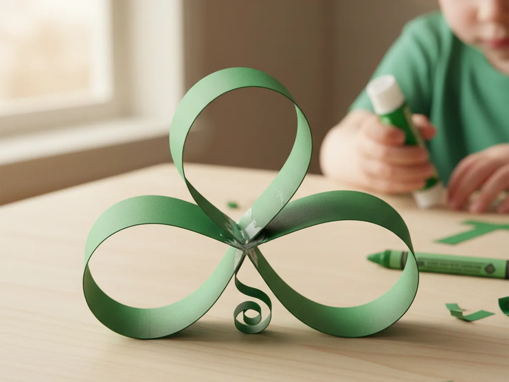
7. Paper Leprechaun Top Hat
Roll green cardstock into a tall cylinder, attach a wide paper brim circle at the base, and glue a black paper band with a yellow square buckle around the front. Kids can wear it on their heads or set it out as a centerpiece for a March family dinner. This is one of the most festive St Patrick's Day paper crafts because the moment your child puts the hat on, the giggles start. 🎩
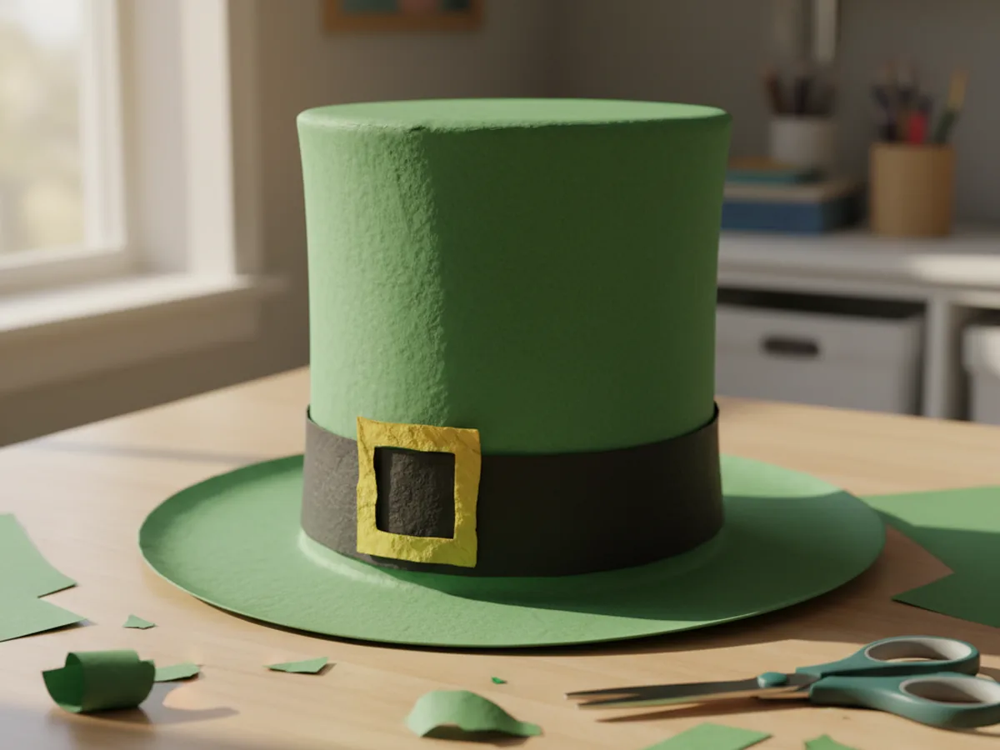
8. Paper Pot of Gold
Cut a black paper pot shape with a curved bottom and a wide rim, glue it onto cardstock, and pile small gold cardstock circles inside and spilling over the top to look like coins. Add a few sparkle stars in marker for an extra touch. The gold paper coins really shine, and this is one of the most rewarding St Patrick's Day paper crafts for kids who love anything that glitters.
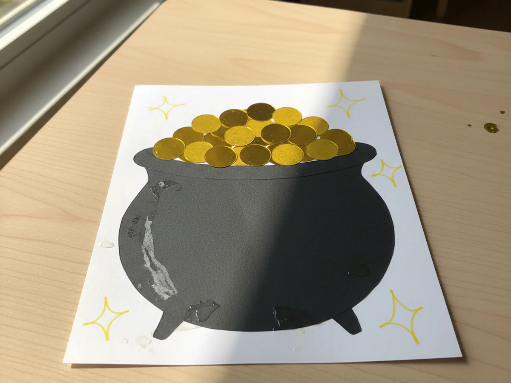
9. Paper Rainbow Mobile
Cut six paper rainbow strips in classic rainbow colors, glue them in arches on a white cloud-shaped piece of cardstock, then punch a hole at the top and dangle small paper raindrops on threads from the bottom. Hang the mobile by a window so the colors catch the light. Paper crafts for St Patrick's Day like this one also work beautifully for spring and Pride season, so you get a craft you can keep up for weeks.
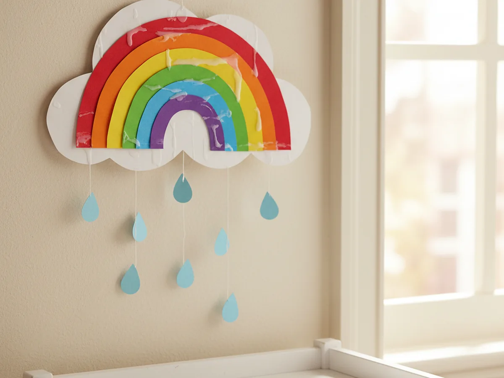
10. Tissue Paper Shamrock Suncatcher
Cut a large shamrock outline from green construction paper, leaving the inside open, then tape small squares of green and yellow tissue paper across the back to fill in the shape. Stick it on a window and the sun glows through every tissue square like stained glass. This is one of the prettiest St Patrick's Day paper crafts and a wonderful quiet activity for a rainy afternoon.
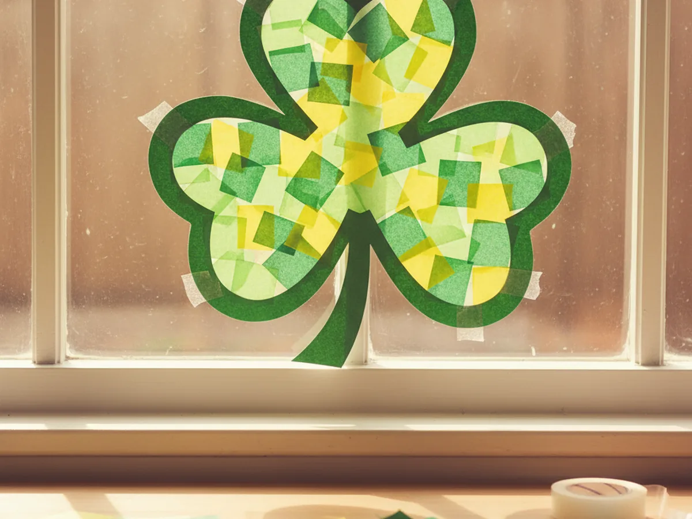
11. Paper Plate Shamrock Wreath
Cut the center out of a paper plate to make a ring, paint or wrap it in green paper, then glue small paper shamrocks all the way around the ring. Tie a green ribbon at the top for a hanger and you have a charming front door wreath. This is one of those festive St Patrick's Day paper crafts that turns a paper plate into a real piece of holiday decor.
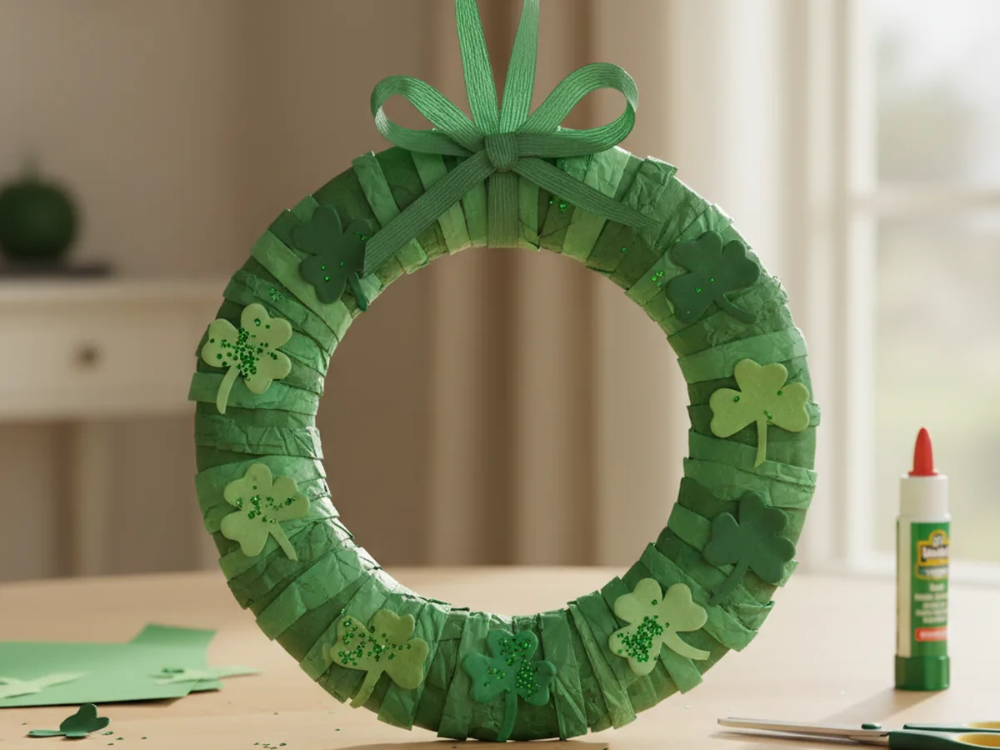
12. Paper Shamrock Crown
Cut a long strip of green construction paper to fit around your child's head, then glue several paper shamrocks across the front so they pop up like crown points. Add a few gold star stickers between the shamrocks for an extra-festive touch. St Patrick's Day paper crafts like this crown turn a simple afternoon into a whole pretend parade through the living room.
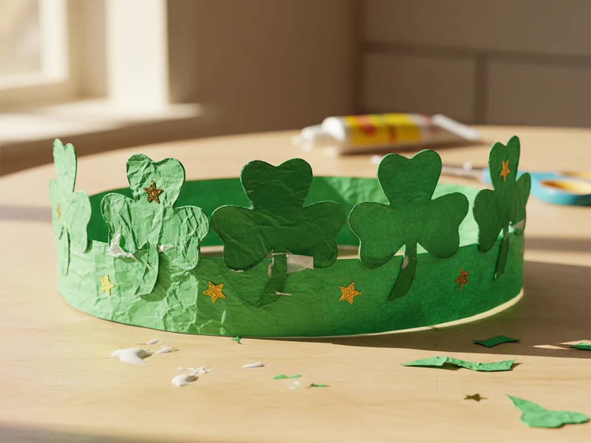
13. Origami Shamrock
Fold a small square of green origami paper into four heart-shaped petals using simple folds, then arrange the four hearts to meet in the middle for a textured paper shamrock. Older kids love the satisfaction of seeing folds turn into a shape. This is one of the more advanced paper crafts St Patrick's Day ideas, but a quick video tutorial makes it doable for school-age children too.
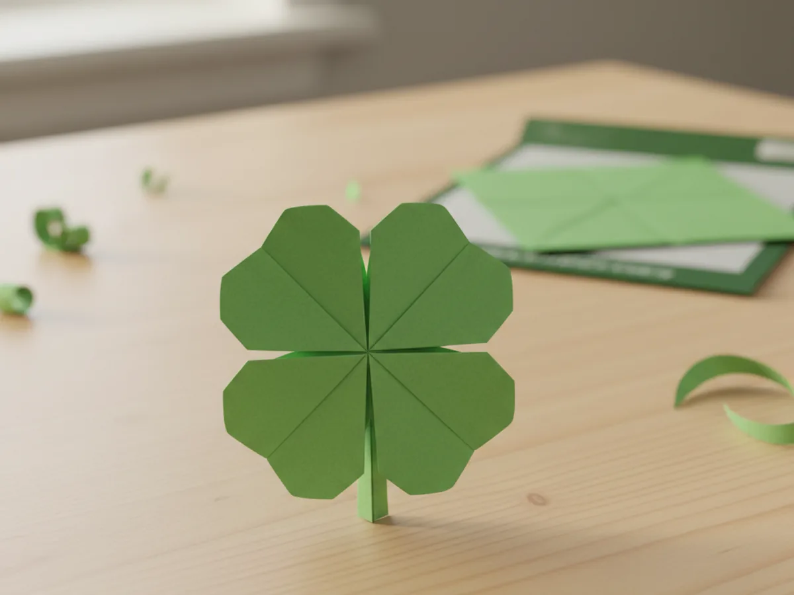
14. Paper Lucky Charm Necklace
Cut small paper shamrocks, horseshoes, gold coins, and rainbow shapes, punch a hole in each one, then thread them onto a long piece of yarn or ribbon to make a lucky charm necklace. Kids love wearing it for the whole month of March. St Patrick's Day paper crafts that double as wearable accessories always feel extra magical to little ones.
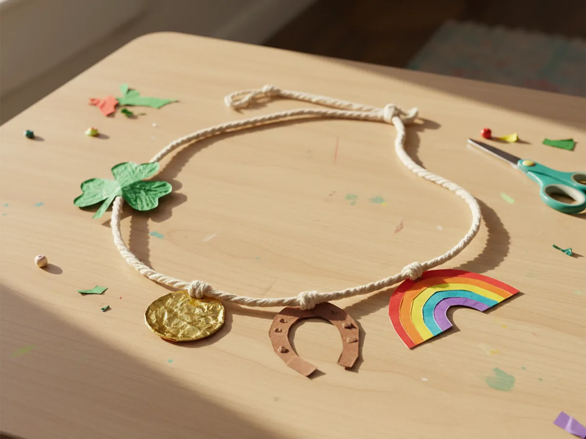
15. Paper Leprechaun Beard
Cut a wide, curly orange paper beard with two ear loops on each side so kids can wear it across their face like a costume. Add small accordion paper folds to give the beard a curly look. The reaction when your child catches a glimpse of themselves in the mirror is priceless. This is one of the silliest St Patrick's Day paper crafts and turns a quiet afternoon into a full-blown leprechaun parade.
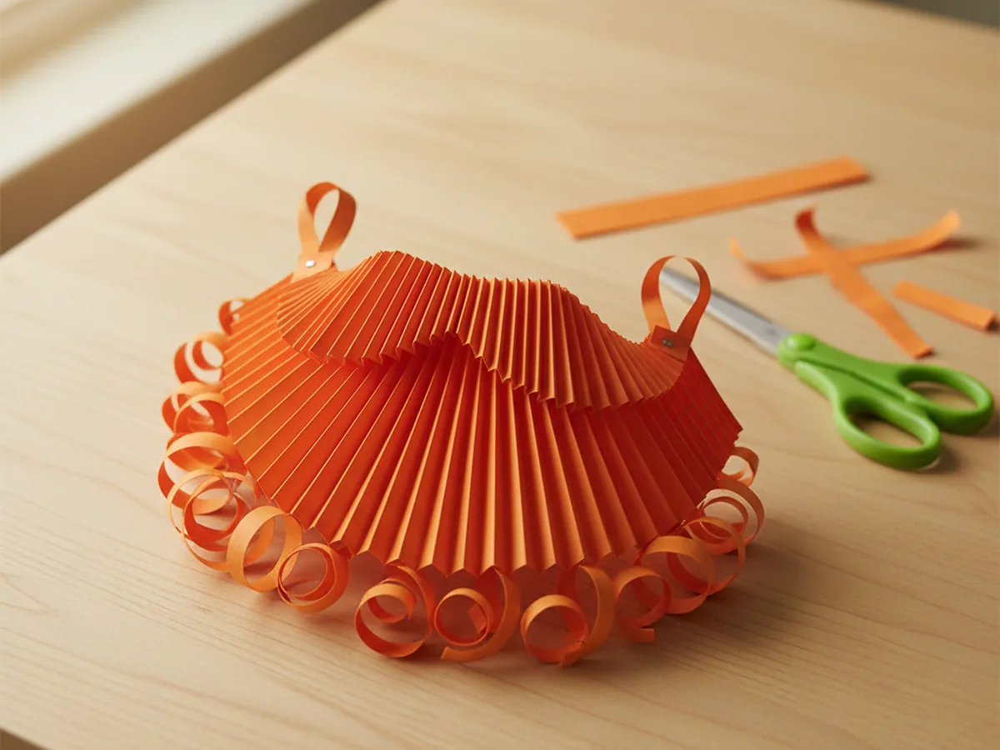
16. Paper Coin Garland
Cut dozens of small gold cardstock circles, draw a dollar sign or shamrock on each one, then tape them along a long piece of green ribbon to create a glittery coin garland. Hang it from a doorway, the staircase, or above the breakfast table for the morning of March 17. These shiny St Patrick's Day paper crafts bring a whole afternoon of festive sparkle without any glitter glue mess. ✨
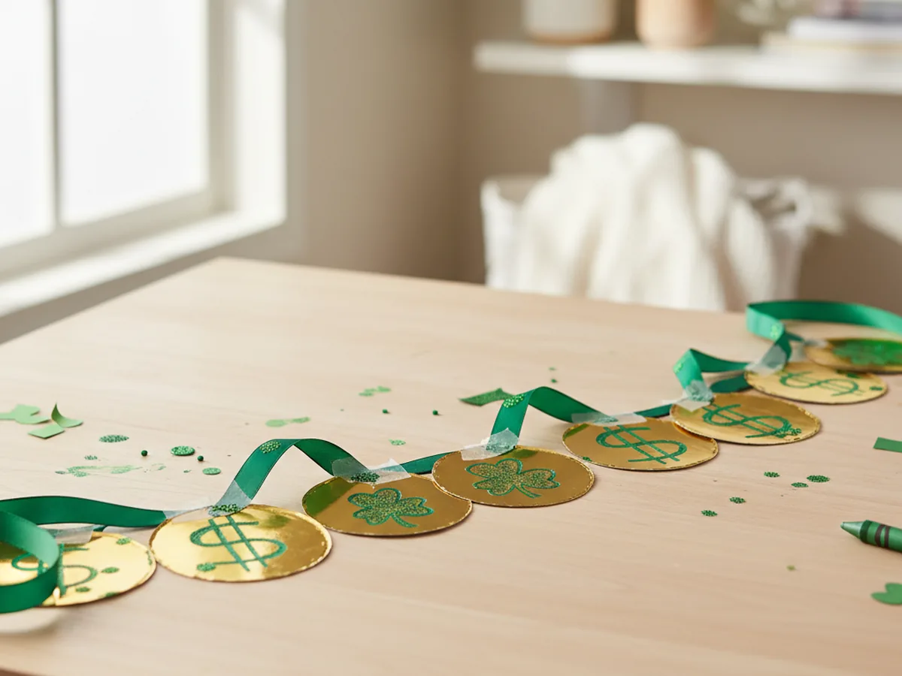
17. Shamrock Stamp Print
Cut a thick paper shamrock shape, glue it onto a small block or cardboard square to make a stamp, dip it lightly in green paint, and press it across white paper to create a beautiful pattern of repeating shamrocks. Wrap the finished print around a jam jar to make a sweet little vase. St Patrick's Day paper crafts with a stamping element are always a hit because little ones love anything they can press over and over again.
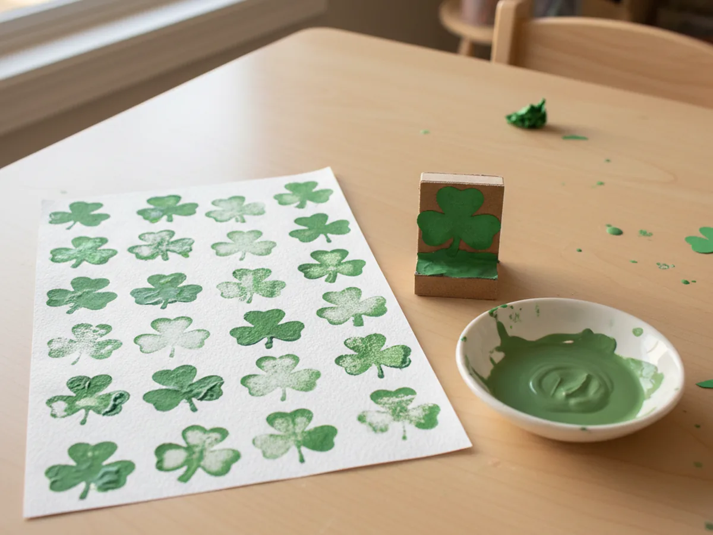
18. Paper Cup Leprechaun
Wrap a paper cup in green paper, glue a small face circle on the front with a marker smile, add a wide brim hat on top with a paper buckle, and stick a curly orange paper beard underneath the face. Kids can stand the leprechaun on a shelf or use it as a tiny treat cup at the table. This is one of the cutest St Patrick's Day paper crafts for upcycling everyday materials into something playful.
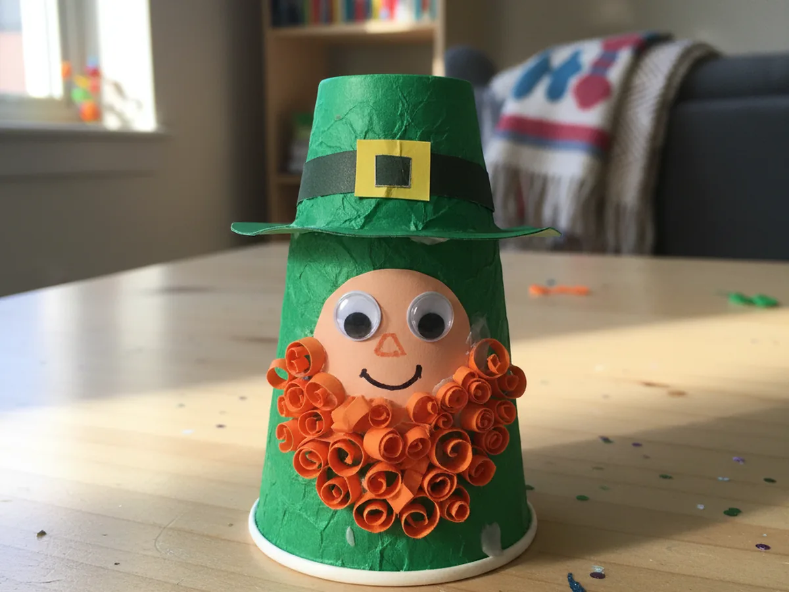
19. Lucky Greeting Card
Fold a sheet of cardstock in half to make a card, decorate the front with paper shamrocks, a rainbow, and a sweet handwritten message like "Happy St Patrick's Day," and tuck a small paper coin inside as a surprise. Children love giving these out to grandparents, neighbors, and their teachers. Learn a little about the history of the holiday here if you want to share a fun fact while you craft together.
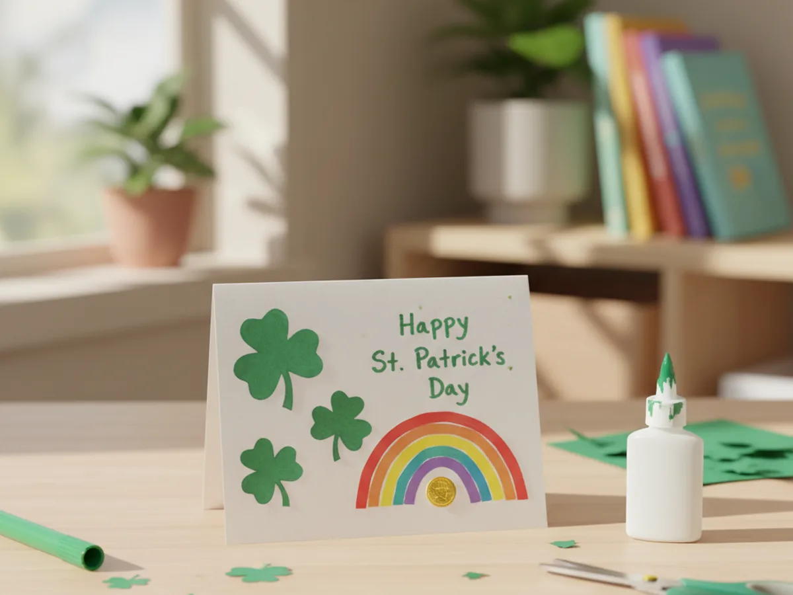
20. Paper Plate Leprechaun Face
Paint a paper plate in a soft skin tone, glue on a curly orange paper beard around the lower half, add two googly eyes, a pink paper smile, and a small green paper hat on top. The whole face takes shape in just a few minutes and kids love hanging their finished leprechaun above the kitchen table. This is one of the best St Patrick's Day paper crafts to round out a list because the result feels like a proud little finale.
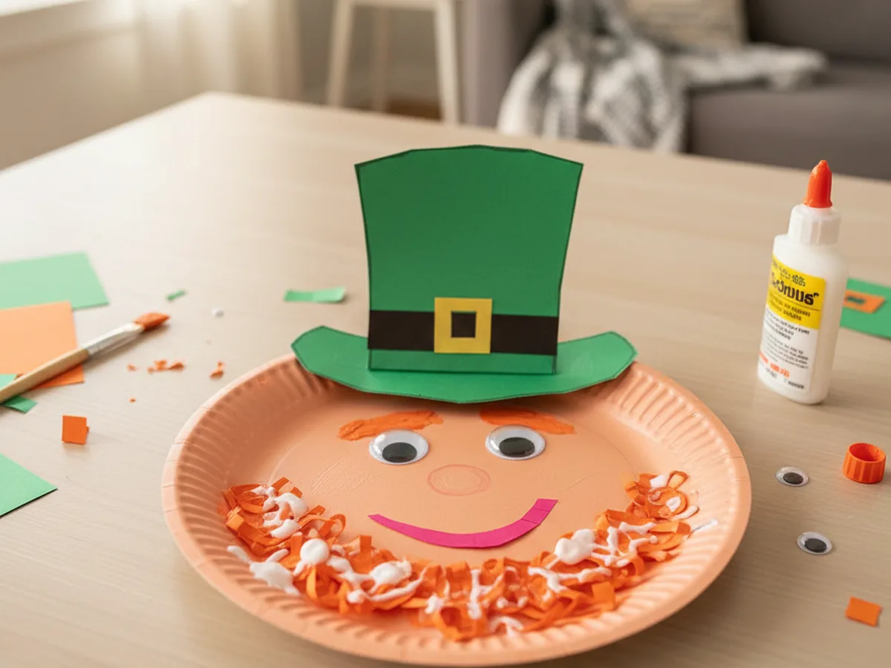
Final Thoughts
The best part about St Patrick's Day paper crafts is how a simple stack of green and gold paper can fill an entire afternoon with smiles. None of these projects ask for fancy supplies or perfect results. They just give your child a chance to cut, glue, decorate, and feel proud of something they made with you.
Pick the idea that feels most doable for today, gather a few sheets of paper, and enjoy the cozy time you spend creating side by side. The shamrocks, rainbows, and little leprechauns you make together will become some of the sweetest March memories of all.
More Crafts You'll Love
If you enjoyed this list, here are two more cheerful paper craft roundups to try with your kids next.
Happy crafting, and enjoy every lucky little moment along the way. 💚